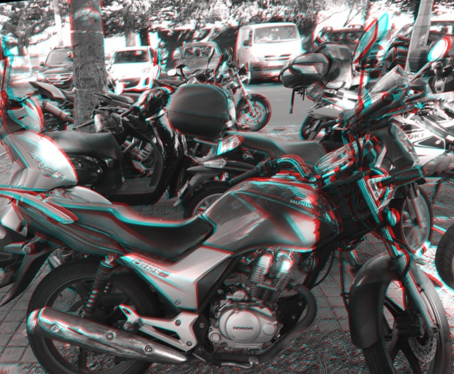
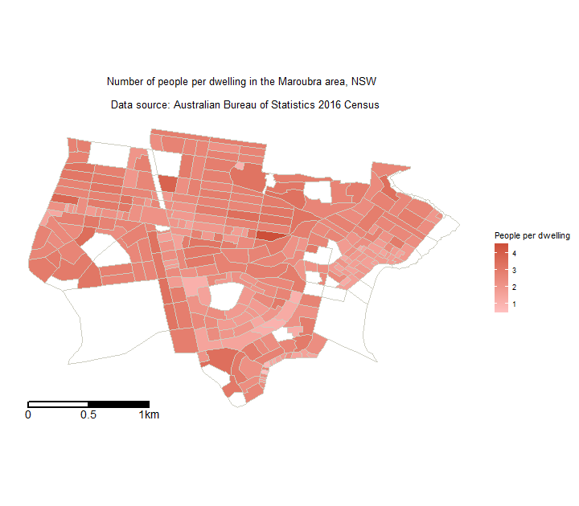
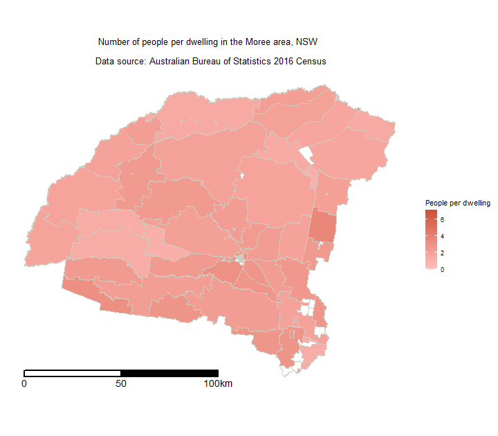
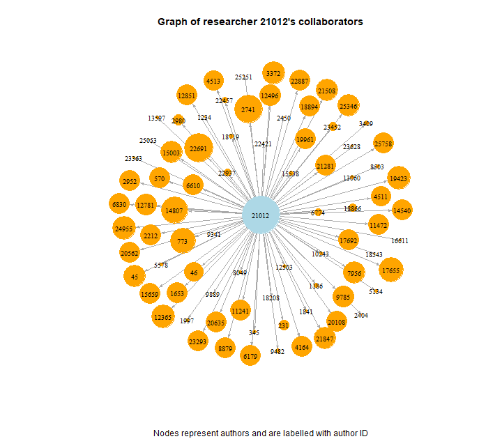
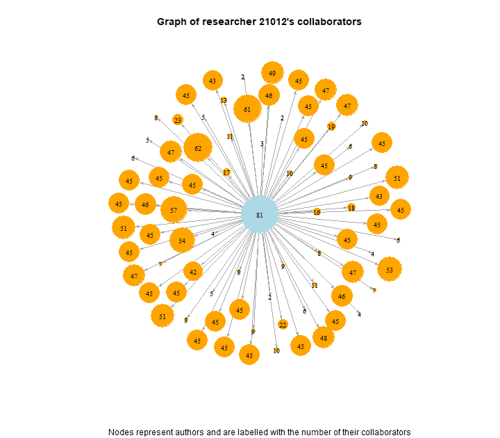
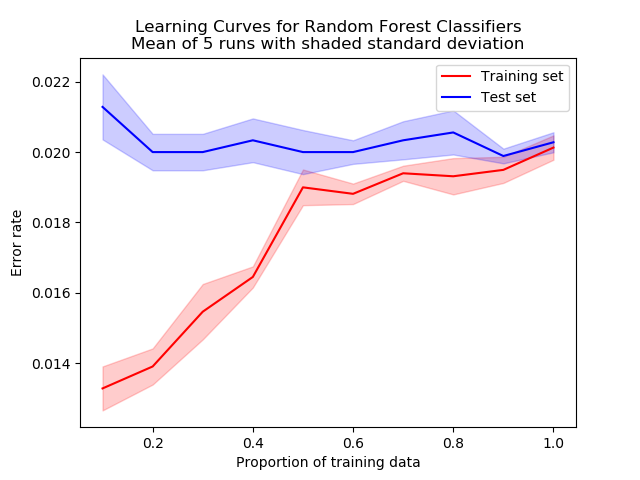
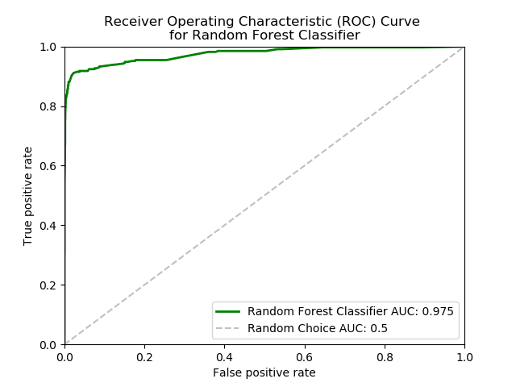
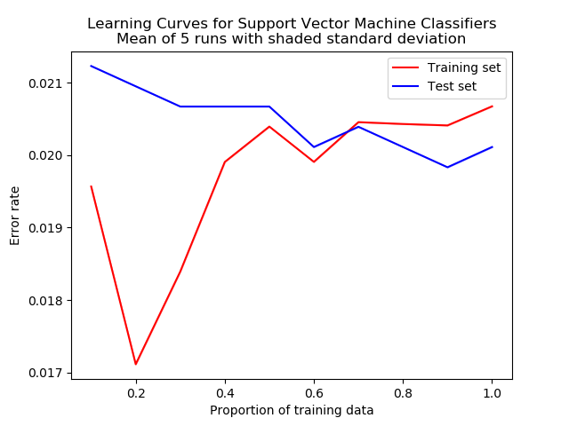
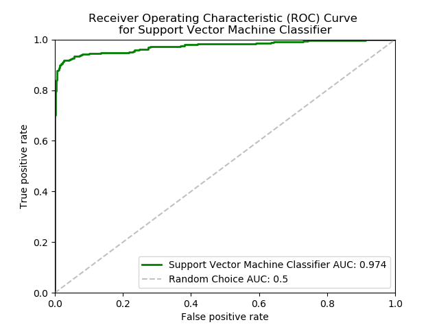

Anaglyphs from Non-stereo Images

Two images were taken with a handheld camera and then rectified to create an anaglyph. Use red/cyan glasses to view the 3D effect.
Australian Local Population Maps
Australian Bureau of Statistics 2016 Census and map data were used to make population density maps of local areas in NSW.
 Collaborator Visualisation
Visualises pairings between the most collaborative author and other authors in papers submitted to Arxiv’s General Relativity and Quantum Cosmology category.
 Classification of Pulsars and Non-pulsars
Using data from the High Time Resolution Universe Survey (South), five supervised machine learning algorithms are used to classify pulsar and non-pulsar stars.
   